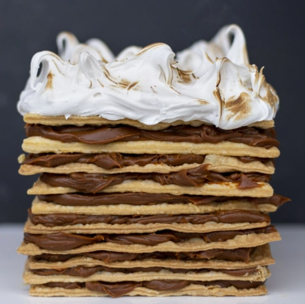
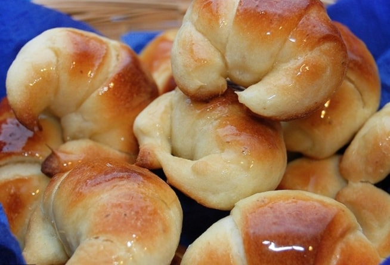
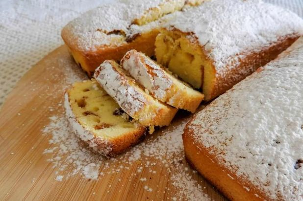
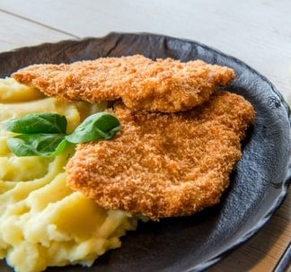

Recetas
Recetas dulces
Torta Rogel
- Mezclar los ingredientes hasta formar una masa manejable.
- Estirar la masa lo más fina posible y cortar en discos del tamaño deseado.
- Pinchar los discos y cocinarlos a horno fuerte (200°C) sobre una placa. Deben permanecer hasta dorarse.
- Una vez listos, armar la torta poniendo dulce de leche entre disco y disco.
- Decorar con merengue. ¡Mejor si hacen copitos!

Medialunas
- Fermentar la levadura con agua tibia. A la vez, mezclar manteca pomada con azúcar.
- A la mezcla de manteca y azúcar, agregarle huevo, miel y leche. Mezclar y luego agregar la levadura.
- Incorporar todos los ingredientes SIN BATIR.
- Agregar premezcla hasta que quede una masa manejable. No debe quedar muy pegajosa.
- Amasar hasta que quede una masa lisa y estirar. Cortar la masa en triángulos.
- Enrollar los triángulos desde la base hacia la punta. Aplastar las puntas que quedan y juntarlas.
- Cocinar por 30 minutos a 180°C.
- Pincelar con almibar para darles un estilo de panadería.

Budín
- Mezclar la manteca con los ingredientes secos (premezcla, polvo para hornear, azúcar).
- Agregar los huevos, leche y esencia de vainilla. Integrar hasta lograr una mezcla homogénea.
- Enmantecar y enharinar (con harina sin gluten) un molde o budinera.
- Cocinar en horno medio (180°C) durante aproximadamente 30 minutos. Sabrás que está cocido cuando introduzcas un palillo en el budín y salga seco. Luego desmoldar.

Recetas Saladas
Milanesas de Carne
- Sacarle la grasa de los bordes a la carne. Ya que si no, se nos encogerán cuando las cocinemos.
- Golpear la carne con un martillo machacador, para que quede más tierna.
- Poner la carne en un bowl con: 3 huevos, un chorro de leche, sal, pimienta, pimentón y un poco de mostaza.
- Dejar marinar por, mínimo, 3 horas.
- Una vez transcurrido este tiempo, preparar una fuente grande con rebozador sin TACC (recomendamos la fariña de mandioca de Aldema). Si quieren le pueden sumar ajo en polvo a esto.
- Pasar todas las lonjas de carne ya marinadas por el rebozador y apilar en un plato.
- Finalmente meter la carne en una asadera con aceite en el horno y cocinar 5 minutos de cada lado.

Empanadas de Humita
- En una cacerola colocar maizena y aceite. Prender el fuego e incorporar leche de a poco. Hasta que no queden grumos.
- Agregar los granos de choclo ya cocidos.
- Dejar cocinar 10 minutos en fuego mínimo una vez que hierve. Sin dejar de mezclar.
- Rellenar las tapas de empanada sin TACC dejando 1cm de espacio en los bordes.
- Hacer un buen repulgue y mandar 15 minutos al horno a fuego medio.
Pizza
- Espumar la levadura en un bowl con agua tibia y un poco de azúcar.
- En otro recipiente colocar la premezcla, la sal, y mezclar. Una vez que estén bien integrados, hacer un hueco en el medio y agregar el agua, el aceite y la levadura espumada.
- Mezclar todo bien. Primero con un utensilio, y cuando sea posible empezar a amasar con las manos.
- Una vez lista, estirar en una pizzera ya aceitada y pintar con salsa de tomate.
- Llevar a horno fuerte durante 10 minutos.
- Retirar, agregar un poco más de salsa de tomate, queso muzzarella, orégano a gusto, y cocinar hasta que el queso esté bien derretido.